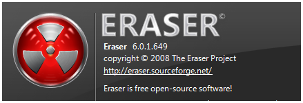
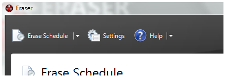

Eraser 6-rc1 released!
The long-awaited public beta for Eraser 6 has been released! Eraser 6 sports a completely revamped user interface, and Windows XP/Vista support out of the box. We've recruited Dennis van Lith to be in charge of UX (User eXperience) and aesthetic appeal for Version 6; here are a few screenshots:


I must admit: paradoxically, not all features of Version 5 has made it into this release, although new features have been added:
- Added a more flexible Task Scheduler (roughly as customisable as Outlook recurring appointments!)
- Unified Task List (no more separate On-Demand/Scheduled tasks: they are now all together)
- Tasks can now contain multiple targets (running a task may have a few things erased at one go; somewhat like a grouping mechanism)
- 8 new erasure methods (above Version 5's five)
- Customisable PRNGs (some complaints about ISAAC should be resolved with the new default of the RNGCryptoServiceProvider, which is a Windows CSPRNG); ISAAC is still selectable for those who prefer speed over security.
- Plugin support (currently quite immature, but the foundations are there)
- Built-in updater
- EraserL has been replaced by... Eraser. The same Eraser.exe can do both GUI and command line
Features removed:
- Erasures of Encrypted/Compressed/Sparse NTFS files (unlikely to be implemented, low-level undocumented APIs required)
- FAT32 FAT erasures (to be done in the rc-1/final period: you'll get an error for this)
- Shell Context menus (not completely implemented yet)
These are certainly just the tip of the iceberg. You'll find out more when you use the program: trust me, you most definitely will enjoy the new Experience.
Disclaimer: The security of the erasures has not been verified by internal or external entities. The code is still of beta quality and may not remove all traces of files with the confidence of Version 5. If you have security concerns, do use Version 5 while the security aspects of Version 6 are ironed out. It is however noteworthy that v6 uses only documented APIs for erasure and therefore the risk of corrupting your drives is lower than Version 5.
Unfazed, ye brave Software Warrior? Follow the instructions about installing betas then Download it now.


Latest News
Eraser 6.0.8 released!
Eraser 6.0.8, a maintenance release in the stable 6.0.x line was released today. 6.0.8 addresses a significant number of stability and usability issues found in Eraser 6.0.7. Eraser 6.0.8 is now the best in the Eraser 6.0.x line, as such, all users are encouraged to upgrade to 6.0.8 as soon as possible. Read the full announcement.